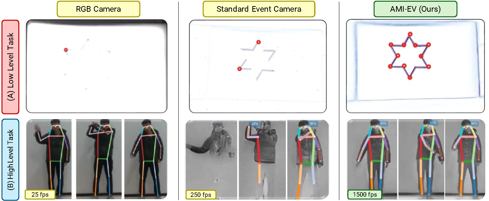
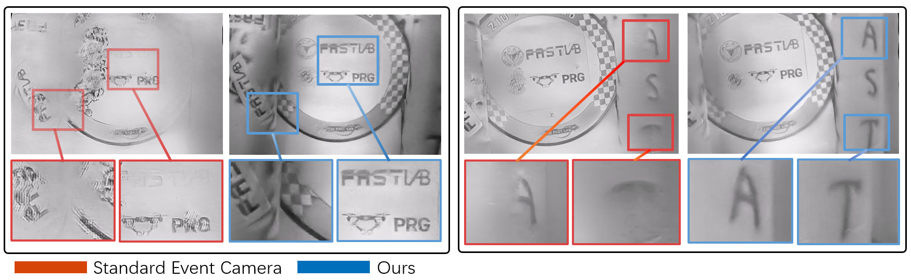
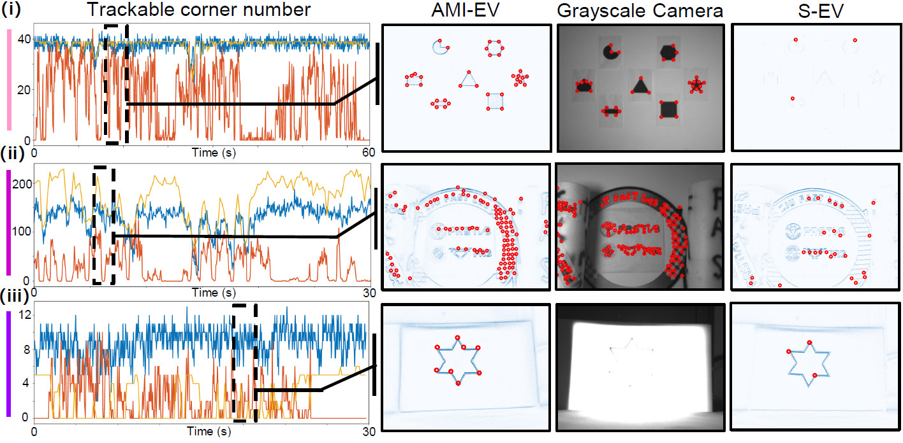
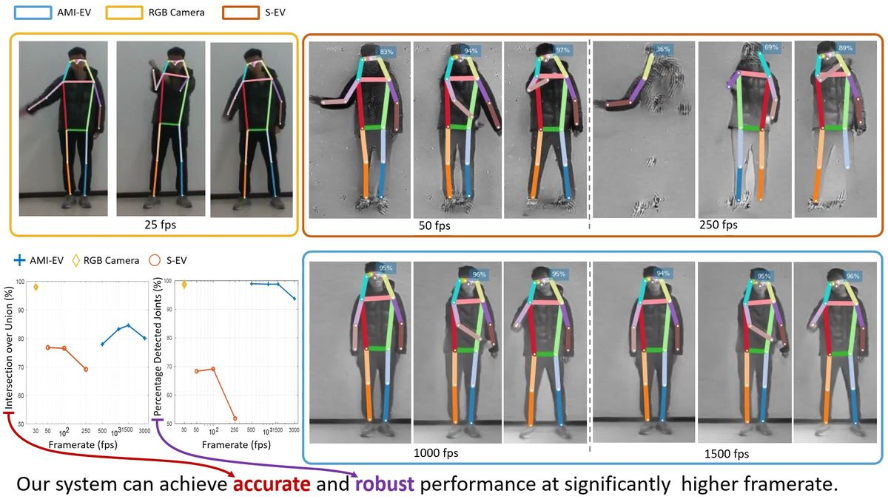
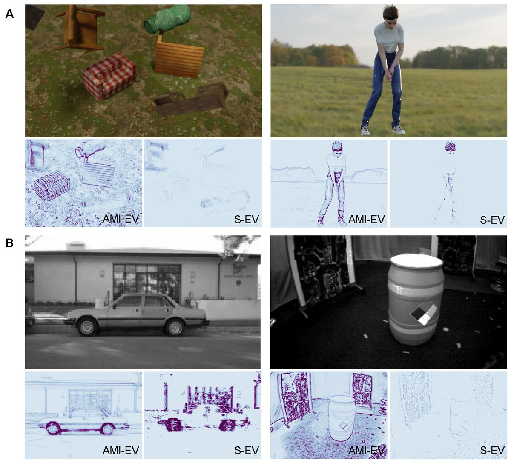

Microsaccade-inspired Event Camera for Robotics
Science Robotics 9(90), eadj8124 (2024)

AMI-EV can achieve robust performance in low-level and high-level vision tasks that both RGB and event cameras fail to deliver.
Abstract
Neuromorphic vision sensors or event cameras have made the visual perception of extremely low reaction time possible, opening new avenues for high-dynamic robotics applications. These event cameras’ output is dependent on both motion and texture. However, the event camera fails to capture object edges that are parallel to the camera motion. This is a problem intrinsic to the sensor and therefore challenging to solve algorithmically. Human vision deals with perceptual fading using the active mechanism of small involuntary eye movements – the most prominent ones called microsaccades. By moving the eyes constantly and slightly during fixation, microsaccades can substantially maintain texture stability and persistence. Inspired by microsaccades, we designed an event-based perception system capable of simultaneously maintaining low reaction time and stable texture. In this design, a rotating wedge prism was mounted in front of the aperture of an event camera to redirect light and trigger events. The geometrical optics of the rotating wedge prism allows for algorithmic compensation of the additional rotational motion, resulting in a stable texture appearance and high informational output independent of external motion. The hardware device and software solution are integrated into a system, which we call Artificial MIcrosaccade-enhanced EVent camera (AMI-EV). Benchmark comparisons validate the superior data quality of AMI-EV recordings in scenarios where both standard cameras and event cameras fail to deliver. Various real-world experiments demonstrate the potential of the system to facilitate robotics perception both for low-level and high-level vision tasks.
Introduction
Data-quality Improvement on Different Event Representations

Our AMI-EV can acquire more environmental information than traditional event cameras. It can maintain a high-informational output while preserving the advantages of event cameras, such as HDR and high temporal resolution.
Low-level Vision Task: Feature Detection and Tracking

In structured environment (i), both the Grayscale camera and AMI-EV outperform the event camera. In unstructured environment (ii), Grayscale camera is the best, while AMI-EV can also achieve robust performance. In challenging illumination conditions (iii), only AMI-EV can work robustly. The grayscale camera suffers from its low dynamic range, while the event camera cannot maintain stable texture.
High-level Vision Task: Human Detection and Pose Estimation

Open-sourced Simulator
A simulator is included for trying the system and testing algorithms without the hardware.

Data generated by the simulator. (A) (left) 3D rendered scene with multiple moving objects (right) golf scene. (B) Output of the released translator. (left) image from the Neuromorphic-Caltech 101 dataset and two event count images generated from an S-EV and an AMI-EV, respectively; (right) scene from Multi Vehicle Stereo Event Camera Dataset
BibTeX
@article{doi:10.1126/scirobotics.adj8124,
author = {Botao He and Ze Wang and Yuan Zhou and Jingxi Chen and Chahat Deep Singh and Haojia Li and Yuman Gao and Shaojie Shen and Kaiwei Wang and Yanjun Cao and Chao Xu and Yiannis Aloimonos and Fei Gao and Cornelia Fermüller },
title = {Microsaccade-inspired event camera for robotics},
journal = {Science Robotics},
volume = {9},
number = {90},
pages = {eadj8124},
year = {2024},
doi = {10.1126/scirobotics.adj8124},
URL = {https://www.science.org/doi/abs/10.1126/scirobotics.adj8124},
eprint = {https://www.science.org/doi/pdf/10.1126/scirobotics.adj8124}
}